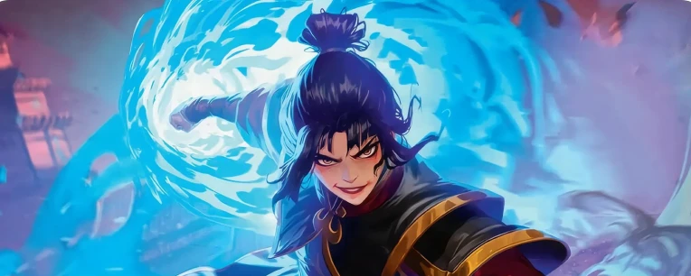
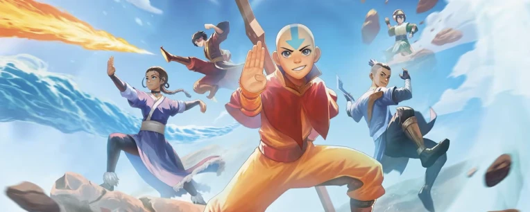
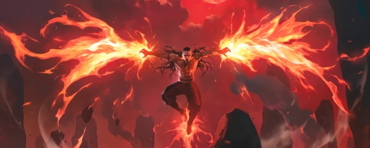
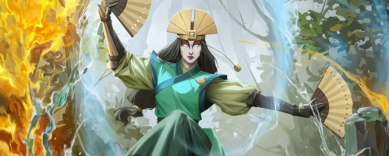

Avatar
Universe Beyond - Avatar: The Last Airbender
Un'avventura indimenticabile tra Dominatori, Spiriti e la magia delle Quattro Nazioni ti aspetta. In questa espansione Crossover, l'universo di Magic: The Gathering incontra il capolavoro animato di Michael Dante DiMartino e Bryan Konietzko. Le carte di questo set ti permetteranno di rivivere l'epico viaggio di Aang per riportare l'equilibrio nel mondo, portando sul tavolo da gioco personaggi iconici, luoghi leggendari e tematiche indissolubilmente legate al dominio degli elementi e all'armonia.
Varianti Speciali
Per celebrare le radici artistiche dell'espansione, il trattamento speciale Pergamena Antica trasforma le carte più iconiche in classici rotoli dei dominatori. Il vero tesoro del set è però lo Stato dell'Avatar: una rarissima variante con foil in rilievo completamente luminescente. Trovare questa carta esclusiva, che simula l'immenso potere cosmico di Aang, è un'impresa rara quanto padroneggiare i quattro elementi, rendendola il pezzo più ambito dell'intera collezione.
Perché sbustare Avatar: The Last Airbender
Questa espansione è imperdibile per tre motivi principali:
- Un viaggio straordinario: Ti permette di rivivere in prima persona il cammino per dominare i quattro elementi e le atmosfere uniche del mondo di Avatar.
- Crossover Unico: Unisce perfettamente le meccaniche di Magic con una delle serie animate più amate di tutti i tempi, rendendola ideale sia per i fan storici che per i nuovi giocatori.
- Nuove Sinergie: Offre carte potenti e affascinanti focalizzate sulle fazioni iconiche (come la Nazione del Fuoco e il Regno della Terra) e su nuove dinamiche di gioco legate alle arti del dominio.

Fazioni e Personaggi Principali
L'espansione "Avatar: The Last Airbender" varia enormemente le possibilità di costruzione dei mazzi, permettendo di giocare strategie legate ai protagonisti dell'avventura. Ecco alcuni dei concetti tematici principali:
Il Team Avatar: Mazzi focalizzati sulla versatilità, l'equilibrio e la sinergia tra i compagni, guidati dal coraggio di Aang, Katara, Sokka, Toph e Zuko.

La Nazione del Fuoco: Strategie basate sull'aggressività, i danni diretti e la supremazia tattica, sfruttando la forza militare e la potenza distruttiva del dominio del fuoco.

Il Regno della Terra e le Tribù dell'Acqua: Mazzi difensivi o basati sul controllo che schierano fieri guerrieri, dominatori resilienti e spiriti antichi per sopraffare gli avversari attraverso la resistenza inarrestabile e la fluidità dell'acqua.

Pronto per il viaggio?
L'espansione Avatar: The Last Airbender dimostra come l'Universo di Magic possa accogliere storie leggendarie, regalando sfide sempre fresche e ricche di strategia. Che tu sia un veterano o un nuovo giocatore pronto a muovere i primi passi in questo crossover, questo set saprà conquistarti. Raduna il tuo gruppo, studia le nuove carte e unisciti all'avventura più epica dell'anno!